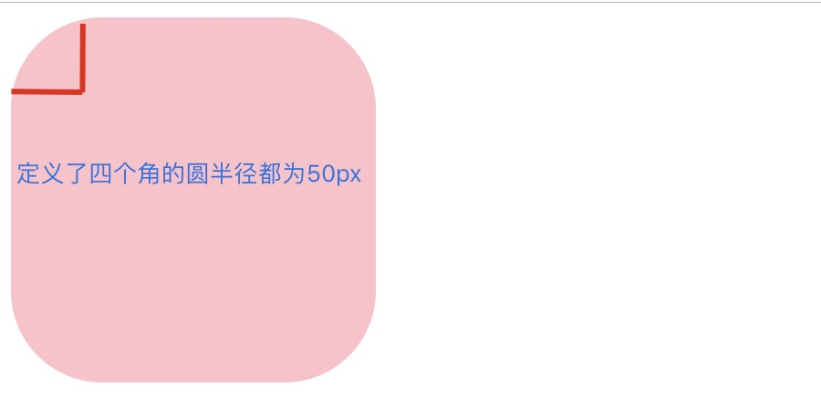
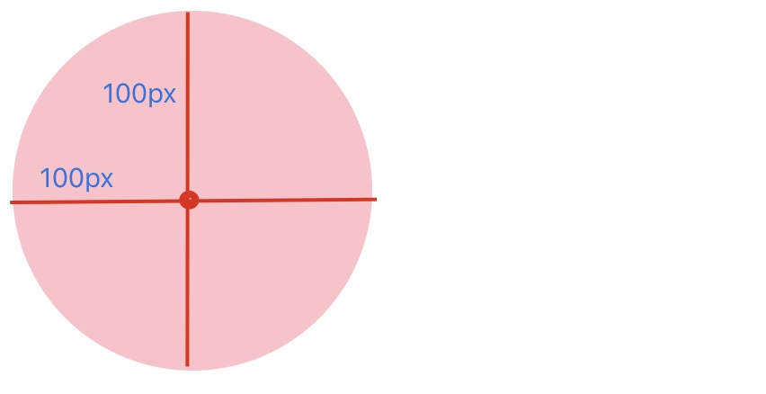
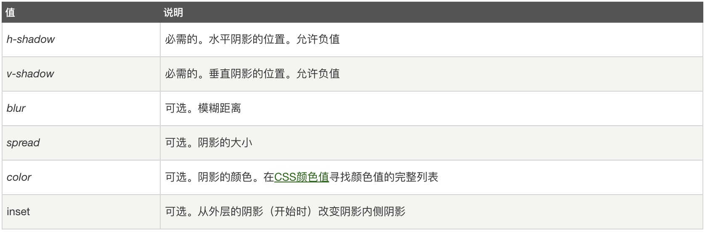
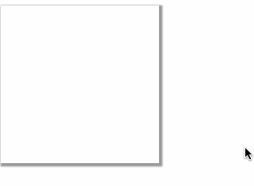

CSS3可以简单理解成是CSS的增强版，它的优点在于不仅有利于开发与维护，还能提高网站的性能。
圆角在实际开放过程中，还是蛮常见的。以前基本是通过背景图片做的，有了CSS3后可以使用简单的属性搞定，可以通过border-radius设置元素的圆角半径。
圆角边框属性 : border-radius
属性值
border-radius: 属性1，属性2，属性3，属性4
# 四个值：第一个值为左上角，第二个值为右上角，第三个值为右下角，第四个值为左下角
border-radius: 属性1，属性2，属性3
# 三个值：上->左右->下
border-radius: 属性1，属性2
# 两个值：上下->左右
border-radius: 属性1
# 一个值：四个圆角值相同对于每个边角也可以单独写
border-top-left-radius:10px; // 定义了左上角的弧度半径为10px
border-top-right-radius:5px; // 定义了右上角的弧度5px;
border-bottom-right-radius:10px; // 定义了右下角的弧度
border-bottom-left-radius:10px; // 定义了左下角的弧度1）画圆弧
<!DOCTYPE html>
<html>
<head>
<title></title>
<style type="text/css">
div {
width: 200px;
height: 200px;
background: pink;
border-radius: 50px;
}
</style>
</head>
<body>
<div></div>
</body>
</html>运行结果

很明显，这里四个圆弧的半径都为50px；
2）画圆
画圆的思路其实很简单,只要保证两点
1、盒子的长和宽要相等
2、圆弧的半径要为盒子长的一半
比如将上面属性修改为：
border-radius: 100px;再运行

很明显这里已经是一个圆了。这里我们来思考为什么要设置圆弧设置盒子长的一半。
其实很简单，要实现圆，那么长和宽就应该相等，同时它们的长度就是直径,那么一半就是半径了。
除了可以为元素的四周设置倒圆角以外,CSS3还为我们提供了阴影的功能,能够制作更为精美的外观。
语法
box-shadow: h-shadow v-shadow blur spread color inset;
# 前两个属性是必须写的。其余的可以省略。属性值

示例
<!DOCTYPE html>
<html lang="en">
<head>
<meta charset="UTF-8">
<title>盒子阴影</title>
<style>
div {
width: 200px;
height: 200px;
box-shadow: 2px 2px 2px 2px rgba(0,0,0,0.4);
/*transition: all 1s;*/
}
div:hover { /*鼠标经过div时候的样子。。。*/
box-shadow: 0 15px 30px rgba(255,0,0,0.5);
}
</style>
</head>
<body>
<div></div>
</body>
</html>运行结果

你如果愿意有所作为，就必须有始有终。(15)